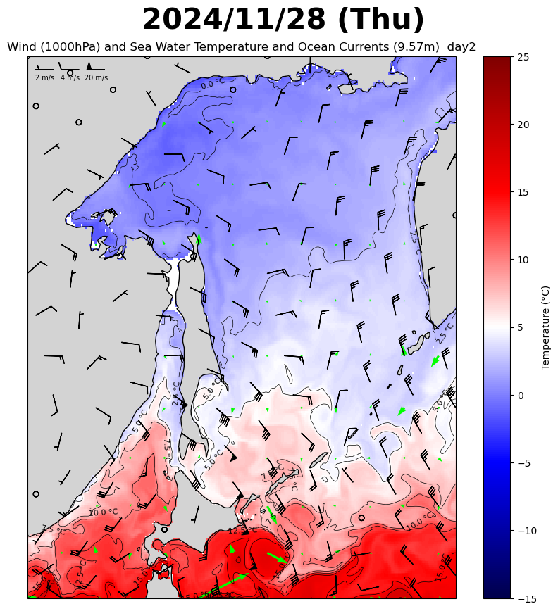

The movements of seabirds are mainly affected by season, weather conditions and distribution of food resources.
Related to this, sea surface temperature, ocean currents, and wind direction and speed are shown in the maps below.
Latest Forecast Data:
Daily mean values of sea surface temperature and ocean currents (WD = 9.57),
wind direction and speed (ALT = 10m) at 09:00 JST.

Backward trajectory analysis for 3 days


Seabirds species list (Charadriiformes > Alcidae >)
- Common Murre（ウミガラス）Uria aalge
- Thick-billed Murre（ハシブトウミガラス）Uria lomvia
- Spectacled Guillemot（ケイマフリ）Cepphus carbo
- Pigeon Guillemot（ウミバト）Cepphus columba
- Ancient Murrelet（ウミスズメ）Synthliboramphus antiquus
- Japanese Murrelet（カンムリウミスズメ）Synthliboramphus wumizusume
- Kittlitz’s Murrelet（コバシウミスズメ）Brachyramphus brevirostris
- Long-billed Murrelet（マダラウミスズメ）Brachyramphus perdix
- Parakeet Auklet（ウミオウム）Aethia psittacula
- Crested Auklet（エトロフウミスズメ）Aethia cristatella
- Whiskered Auklet（シラヒゲウミスズメ）Aethia pygmaea
- Least Auklet（コウミスズメ）Aethia pusilla
- Horned Puffin（ツノメドリ）Fratercula corniculata
- Tufted Puffin（エトピリカ）Fratercula cirrhata
- Rhinoceros Auklet（ウトウ）Cerorhinca monocerata
Prey list